Tích hợp Botsheet để đẩy dữ liệu từ sheet lên bot
Botsheet là tính năng nhập liệu trên google sheet và đồng bộ nội dung tự động vào AhaChat Bot. Bộ công cụ sẽ bao gồm file mẫu giúp bạn tuỳ chỉnh nội dung tiêu đề, hình ảnh, nút bấm, các hành động cho nút bấm… và tạo tự động trên bot. Bạn sẽ sao chép file mẫu về, sau đó thiết lập nội dung của riêng bạn.
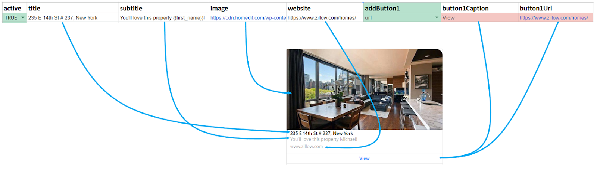
Thêm tiêu đề, phụ đề và mô tả
Thêm hình ảnh và kiểm soát tỷ lệ khung hình (ngang hoặc vuông)
Thêm 1-3 nút bấm theo thông số kỹ thuật của Messenger
Liên kết đến Kịch bản, URL hoặc Kích hoạt các sự kiện khác
Thêm Thuộc tính vào bất kỳ ô nào
Gắn hoặc xóa Thuộc tính khi nhấp vào các nút bấm
Gắn hoặc xóa Thẻ khi nhấp vào các nút bấm
Thêm câu trả lời nhanh bên dưới Thẻ ảnh
1. Tuỳ chỉnh trong file mẫu
1.1 Copy file mẫu từ AhaChat
Bạn phải copy file này về và chỉnh sửa nội dung vì nó có chứa các tên cột giúp đồng bộ tới bot
https://docs.google.com/spreadsheets/d/13tzFZgtA09dSA0yfv2h9ivhIkMVi-2lmk1kHcrdwGwk/edit?usp=sharing
Bấm vào tệp → Tạo bản sao
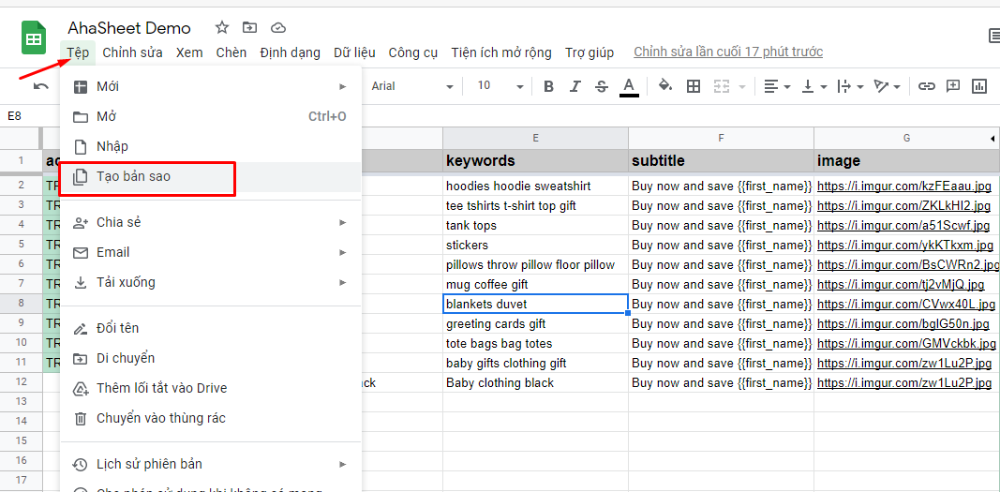
1.2 Thiết lập nội dung trong Google Sheet
Có ba cột được đánh dấu màu xanh lá cây với tiêu đề addButton (addButton1, addButton2, addButton3), mỗi cột đại diện cho một loại nút mà bạn có thể thêm từ trên xuống dưới. Chọn loại nút bằng cách nhấp vào mũi tên ở một trong ba cột addButton màu xanh lá cây và nó sẽ tô sáng các ô tương ứng bằng màu đỏ. button1Caption là tên nút, button1Target điều hướng cho chức năng của nút.
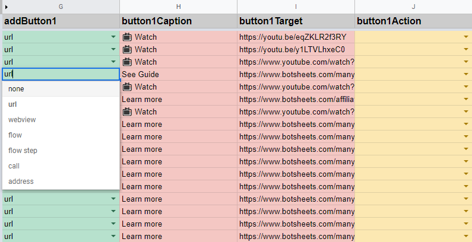
Cột màu vàng với tên button1Action tương ứng với hành động cho các trường hợp muốn gắn của bạn.
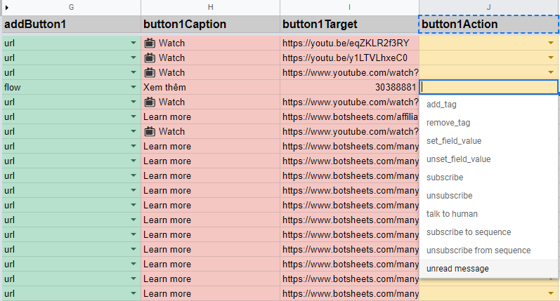
add tag: Gắn thẻ
remove tag: Gỡ thẻ
set field value: Lưu thuộc tính
unset field value: Xoá thuộc tính
subscribe: Đăng ký nhận tin
unsubscribe: Huỷ đăng ký nhận tin
talk to human: Dừng bot chờ nhân viên
subscribe to sequence: Gắn chăm sóc
unsubscribe from sequence: Gỡ chăm sóc
unread message: Đánh dấu là chưa đọc
Ví dụ mẫu set field value (lưu thuộc tính)
- product: là tên thuộc tính đã tạo sẵn trong bot
- Áo Hoodie: là giá trị của thuộc tính được truyền vào product
Ngoài ra 2 cột product_id và price sẽ được tự động lưu giá trị ở các hàng vào thuộc tính đã tạo trước trong bot ( tên thuộc tính trùng với tên cột ) khi bạn chọn ở cột button1Action là set field value. Chọn các giá trị khác thì 2 cột này sẽ không được lưu.
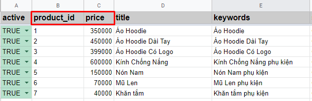
1.3 Liên kết với block trong kịch bản (flow và flow step)
1.3.1 flow
Trong file google sheet mẫu, hãy chọn flow trong cột màu xanh lá addButton1 . Thêm tiêu đề cho nút của bạn trong tương ứng cột button1Caption được đánh dấu màu đỏ. Nhập vào Bot_ID và tên của block trong cùng một kịch bản tương ứng ở cột button1Target theo mẫu:
Bạn có thể lấy "bot_id" trong AhaChat bằng cách mở một kịch bản cụ thể và sau đó xem URL. Đây là một ví dụ.
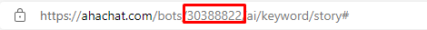
Bạn cũng có thể liên kết kịch bản từ bot khác sang bằng cách nhập nội dung tương ứng ở cột button1Target theo mẫu:
Bạn có thể lấy "bot_token" trong AhaChat bằng cách vào cài đặt → Copy đoạn này.
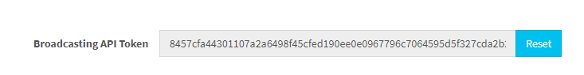
Lưu ý: tên của block cần phải khớp với tên bạn đã đặt trong kịch bản AhaChat . Mỗi tên block cần phải là duy nhất trong chatbot của bạn nếu không Sheet API sẽ không biết bạn đang chuyển tiếp tới block nào.
1.3.2 flow step
Trong file google sheet mẫu, hãy chọn flow step trong cột màu xanh lá addButton1 . Thêm tiêu đề cho nút của bạn trong tương ứng cột button1Caption được đánh dấu màu đỏ, Nhập vào tên của block vd: block_1 trong cùng một kịch bản tương ứng cột button1Target.
Lưu ý: tên của block cần phải khớp với tên bạn đã đặt trong kịch bản AhaChat . Mỗi tên block cần phải là duy nhất trong chatbot của bạn nếu không Sheet API sẽ không biết bạn đang chuyển tiếp tới block nào.
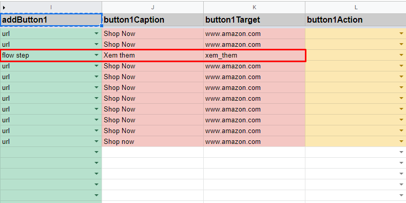
1.4 Các nút khác
Từ cột addButton1, bạn cũng có thể bật các loại nút khác, bao gồm url nhấp vào nút sẽ mở ra một cửa sổ mới chứa địa chỉ url, call sẽ kích hoạt trình quay số điện thoại với số điện thoại bạn nhập ở cột button1Target.
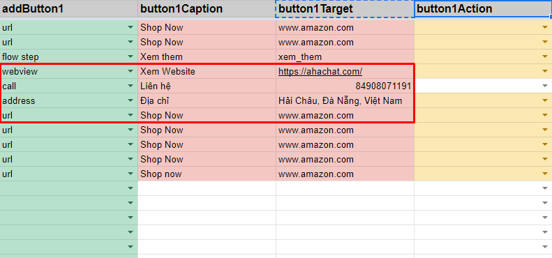
1.4.1 url
Liên kết đến một trang web bên ngoài. Thao tác này sẽ khởi chạy trình duyệt web nguyên bản từ bot Messenger của bạn. Sử dụng http: // hoặc https: // và URL đầy đủ.
1.4.2 call
Kích hoạt điện thoại của bạn để gọi đến một số. Nhập số đầy đủ vào cột button1Target.
1.4.3 address
Sẽ khởi chạy Bản đồ Google và tìm kiếm. Sử dụng định dạng địa chỉ tìm kiếm như sau: 123 tên đường, Hải Châu, Đà Nẵng, Việt Nam
1.4.4 webview
Sẽ mở trang web với địa chỉ bạn nhập dưới dạng webform thu nhỏ của messenger
1.5 Bật & Tắt Nội dung
Trong File Sheet mẫu cũng có thêm 1 cột active cho phép bạn xuất bản hoặc hủy xuất bản ngay lập tức nội dung lên Chatbot Messenger bằng cách đặt trạng thái của một hàng thành True hoặc False.
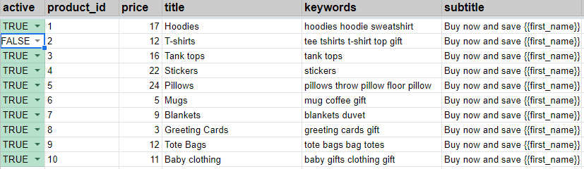
2. Tạo và thiết lập block Sheet API trong AhaChat
Giả sử một người dùng nói với chatbot của bạn từ khoá “pizza”. Ngay lập tức chatbot sẽ hiện thị gợi ý tất cả các loại bánh pizza theo dạng thẻ ảnh.
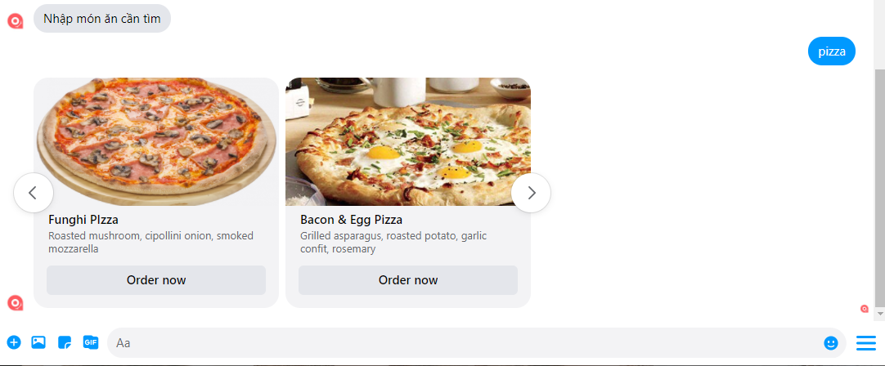
Để làm được điều này đơn giản bạn chỉ cần tạo 1 kịch bản và chọn block SHEET API
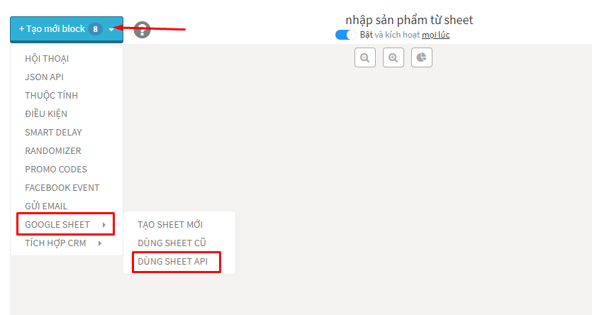
Kết nối tới tài khoản Google có lưu trữ file sheet mẫu ở trên
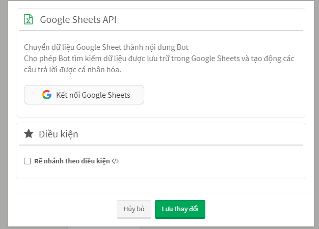
Bạn sẽ có được giao diện để cài đặt liên kết với file sheet mẫu như thế này
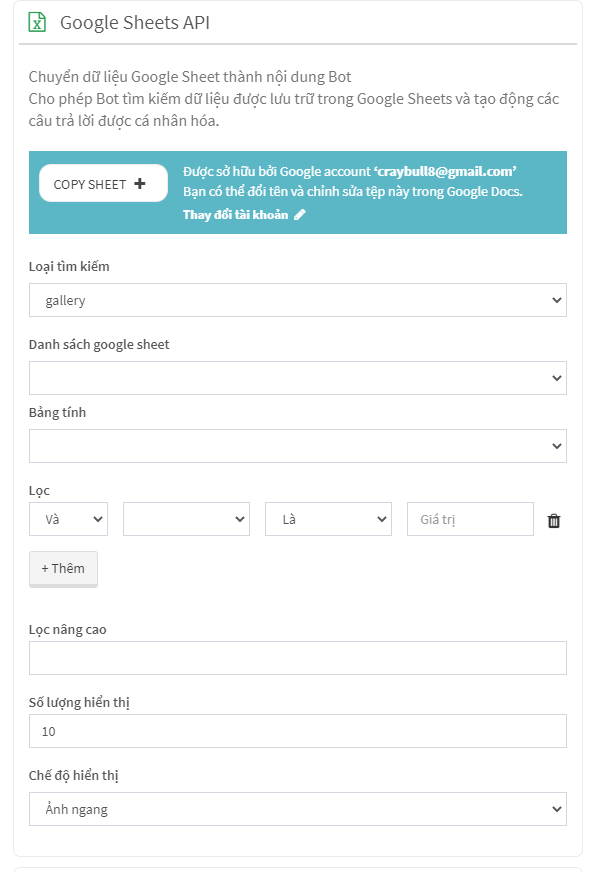
2.1 Giải thích từng tính năng trong Block Sheet API
Đầu tiên là: Loại tìm kiếm, có 3 loại bao gồm:
- gallery: tìm kiếm từ khoá trả kết quả về dạng thẻ ảnh
- images: tìm kiếm từ khoá trả kết quả là 1 hình ảnh
- text: tìm kiếm từ khoá trả kết quả là một nội dung text
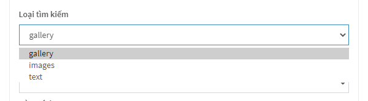
Tiếp theo Danh sách google sheet bạn chọn file sheet mẫu, Bảng tính chọn bảng nội dung cần sử dụng trong file sheet
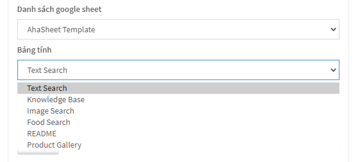
Lọc cơ bản bạn sẽ có sẵn gợi ý lọc theo tên cột với so sánh và giá trị tương tự như block điều kiện. xem hướng dẫn tại đây
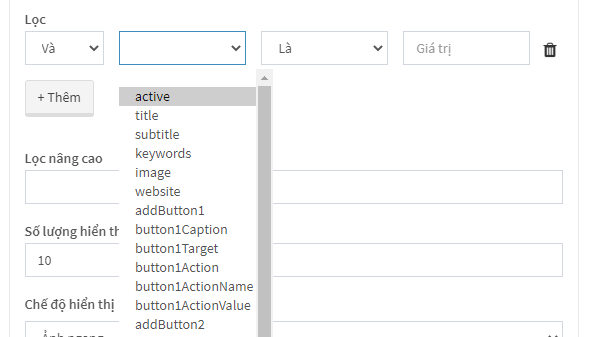
Lọc nâng cao bạn có thể sử dụng bộ lọc nâng cao để tạo kết hợp nhiều điều kiện tìm kiếm
Ví dụ: bạn muốn tìm một bánh pizza nhân thịt thì sử dụng lệnh lọc nâng cao như sau:
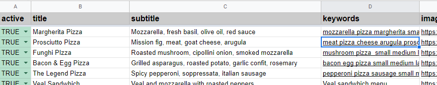
Bạn có thể thấy ở đây rằng cột D trong Google Sheet có tiêu đề keywords và tôi sẽ tìm kiếm hai từ khóa trong cột này là pizza và meat.
Kết quả trả về là Prosciutto Pizza tương ứng trên hàng
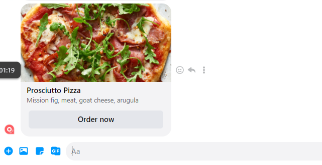
2.2 Danh sách các truy vấn có thể sử dụng trong lọc nâng cao
Bạn có thể sử dụng bất kỳ truy vấn nào dưới đây và thậm chí bạn có thể kết hợp những truy vấn này để tạo ra nhiều tiêu chí tìm kiếm theo yêu cầu của mình.
| Truy vấn | Ý nghĩa |
|---|---|
| offset 4 | Điều này có nghĩa là tìm kiếm của bạn sẽ bắt đầu ở hàng 4. |
| limit 1 | Sẽ chỉ nhận được 1 hàng. Nếu bạn đã xác định “numResults” trong biểu mẫu Nội dung động trong quy trình của mình, điều này sẽ ghi đè bất kỳ giới hạn nào. |
| order by C | Các hàng được liệt kê theo thứ tự theo số, theo thứ tự bảng chữ cái hoặc theo ngày. "Order by C desc" "Order by C asc" sẽ sắp xếp kết quả của bạn theo thứ tự giảm dần hoặc tăng dần nếu được chỉ định. |
| where C>1000 | Bạn có thể sử dụng bất kỳ cái nào sau đây:>, <, =,! =, <=,> = |
| where C>1000 order by C | Bạn có thể sử dụng bất kỳ cái nào sau đây:>, <, =,! =, <=,> = |
| where B like '%2021%' | Bạn có thể tìm kiếm một cột để xem có chứa dữ liệu cụ thể hay không. Trong ví dụ này, bạn sẽ tìm kiếm cột B để xem nó có chứa 2021 hay không. |
| where B like '2021%' | Trong ví dụ này, bạn sẽ tìm kiếm cột B để xem nó có chứa bắt đầu bằng 2021 |
| where B like '%2021' | Trong ví dụ này, bạn sẽ tìm kiếm cột B để xem nó có chứa kết thúc bằng 2021 |
| where B not like '%2021%' | Bạn có thể tìm kiếm một cột để xem nó KHÔNG chứa dữ liệu cụ thể. Trong ví dụ này, bạn sẽ tìm kiếm cột B để xem nó KHÔNG chứa 2021. |
| where B like '%2021%' limit 10 offset 5 | Trong ví dụ này, bạn sẽ tìm kiếm cột B để xem nó có chứa 2021 hay không, nhưng bắt đầu tìm kiếm từ hàng thứ 5. |
| where B like ‘%2021%’ limit 1 | Trong ví dụ này, bạn sẽ tìm kiếm cột B để xem nó có chứa 2021 hay không, nhưng giới hạn kết quả của bạn chỉ ở 1 hàng (sẽ chỉ hiển thị 1 thẻ thư viện). Nếu bạn đã xác định “numResults” trong biểu mẫu Nội dung động trong quy trình của mình, điều này sẽ ghi đè bất kỳ giới hạn nào. |
| where B like 'Ford%' | Điều này có nghĩa là bạn sẽ tìm chữ Ford trong cột B, nhưng nó phải bắt đầu bằng chữ Ford. Nếu dữ liệu trong cột của bạn là "Phụ tùng xe Ford", bạn sẽ không nhận được kết quả nào. Nếu dữ liệu của bạn là "Phụ tùng xe hơi Ford", thì dữ liệu đó sẽ khớp. Nếu bạn tìm kiếm giá, bạn có thể tìm kiếm số, nhưng chỉ nhận được kết quả với $. Ví dụ, trong đó B bắt đầu bằng '\$'. |
| where B like '%Mustang' | Điều này có nghĩa là bạn sẽ tìm văn bản Mustang trong cột B, nhưng nó phải kết thúc bằng Mustang. Nếu dữ liệu trong cột của bạn là "Phụ tùng Ford Mustang", bạn sẽ không nhận được kết quả. Nếu dữ liệu của bạn là "Phụ tùng cho Ford Mustang", thì dữ liệu đó sẽ khớp. Nếu bạn tìm kiếm các số, bạn có thể chỉ muốn tìm các số có%, vì vậy truy vấn của bạn sẽ giống như trong đó B kết thúc bằng '%'. |
| Truy vấn | Ý nghĩa |
|---|---|
| order by C offset 4 | Điều này có nghĩa là tìm kiếm của bạn sẽ bắt đầu ở hàng 4 trong Google Trang tính và sắp xếp các kết quả dựa trên dữ liệu trong cột C. |
| where C>1000 or B<1000 | Điều này có nghĩa là bạn chỉ muốn hiển thị kết quả có số lớn hơn 1000 trong cột C hoặc kết quả có số nhỏ hơn 1000 trong cột B. Cả hai kết quả đều được chấp nhận. |
| where A = 3 and B like '%Widget%' | Điều này có nghĩa là bạn sẽ muốn kết quả từ một ô trong cột A bằng số 3, VÀ trong đó bất kỳ ô nào trong cột B đều chứa từ Widget. |
| where A like ‘%2021%’ or A like ‘%2022%’ | Điều này có nghĩa là bạn sẽ muốn dữ liệu từ cột A chứa 2021 hoặc 2022. |
Cuối cùng là Số lượng hiển thị và Chế độ hiển thị cho thẻ ảnh
- Số lượng hiển thị: Tối đa một lần hiển thị dạng thẻ ảnh là 10 anh, nếu ban chọn nhiều hơn 10 thì bot sẽ tư động tạo thêm nội dung thứ 2 chứa đủ số lượng thẻ ảnh bạn chọn
- Chế độ hiển thị: Bên trên nếu bạn chọn Loại tìm kiếm là gallery thì sẽ cho phép chon chế độ hiển thị ảnh là ảnh ngang hoặc ảnh dọc, nếu chọn Loại tìm kiếm là images hoặc text thì sẽ không có chế độ hiển thị này.
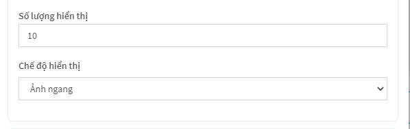
Trên đây là tất cả hướng dẫn để có thể sử dụng được tính năng SHEET API, hy vọng giúp quá trình tạo chatbot của bạn được thuận lợi và nhanh chóng nhất.